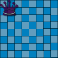

OpenCyc is the open source version of the Cyc technology, the world's largest and most complete general knowledge base and commonsense reasoning engine. Cycorp, the builders of Cyc, have set up an independent organization, OpenCyc.org, to disseminate and administer OpenCyc, and have committed to a pipeline through which all current and future Cyc technology will flow into ResearchCyc (available for R&D in academia and industry) and then OpenCyc.
SWI-Prolog is developed by Jan Wielemaker at the University of Amsterdam's Department of Social Science Informatics. SWI needs no graphical capabilities and will not get them to ensure any logic system can be embedded in an application with a low overhead under 1 MB. Prolog is cross-platform and runs on Microsoft Windows 9x/NT/2000 and most distributions of UNIX/Linux. It is connected to these systems using pipes and shared libraries. Traditionally, people in the Prolog community have written wrappers around the native (C) API of their system. Most of these API's are fairly low-level and a lot of work is required to get the data types of the API properly and naturally represented in Prolog. With a contribution to SWI-Prolog by David Hovel of SwiActX library, it is now possible to write prolog programs that use Windows ActiveX/COM objects. SwiActX gives us access to IDispatch/IUnknown named methods using prolog style arguments. It also deals with collections and converts variant data-types. This enables RAD tools like Visual Basic to be used to manufacture extralogical predicates. With a little care a programmer can make the objects work in a manner respectful to prolog event interoperability.
B-Prolog a versatile and efficient constraint logic programming (CLP) system! B-Prolog is being brought to you by Afany Software (New York), KLS (Tokyo), and NandaSoft (Nanjing).
The birth of CLP is a milestone in the history
of programming languages. CLP combines two declarative programming paradigms:
logic programming and constraint solving. The declarative nature has proven
appealing in numerous applications including computer-aided design and
verification, database, data mining, software engineering, optimization,
configuration, graphical user interface, and language processing. It greatly
enhances the productivity of software development and software maintainability.
In addition, because of the availability of efficient constraint-solving, memory
management, and compilation techniques, CLP programs can be more efficient than
their counterparts written in procedural languages.

B-Prolog is a Prolog system with extensions
for programming concurrency, constraints, and interactive graphics. The system
is based on a significantly refined WAM, called ATOAM, that facilitates software
emulation. In addition to an ATOAM emulator with a garbage collector written in
C, the system consists of a compiler and an interpreter written in Prolog, and a
rich library of built-in predicates written in C and Prolog. B-Prolog follows
the standard of Prolog but also enjoys several features that are not available
in traditional Prolog systems.
B-Prolog provides a bi-directional interface with C and Java. This interface
makes it possible to integrate applications developed in B-Prolog with those
developed in C, C++, and Java such as DBMS systems, Servlet, JSP, COM, and 3D
graphics packages.